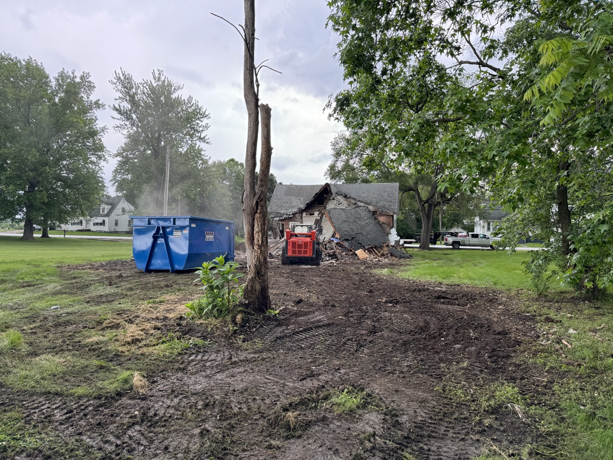

A house fire is one of the worst days a property owner can have, and the weeks after it come with a question nobody plans for: what do you do with the structure that's left? I'm Chris Kurtz, owner of Atlas Excavation & Demolition in Columbia, MO. We handle fire damage demolition and storm damage teardowns across Mid-Missouri, and I wrote this guide to walk you through it the same way I would on your driveway.
This post covers when a burned house needs to come down and when it doesn't, what fire damage demolition costs around Columbia, how the insurance side actually works, and the process step by step. Storm damage works almost the same way, so I'll cover tornado and wind damage teardowns too.
Quick Answer: Fire damage demolition in Columbia, MO typically costs $8,000 to $25,000 for a full house teardown, including hauling and disposal. A contained fire may only need an interior gut-out at $4,000 to $10,000. Most homeowners policies include debris removal coverage that pays for some or all of it. Don't clear anything until your insurance adjuster has documented the loss. Once the claim and permit are squared away, the teardown itself usually takes 1 to 3 days. Call (573) 234-6641 and we'll walk the property with you.
In This Guide:
First Things First: Don't Touch Anything Yet
The most expensive mistake I see after a fire has nothing to do with demolition. It's clearing debris before the insurance adjuster has seen it. Your claim is built on documentation of the loss. If the evidence goes to the landfill before it's documented, you've made your adjuster's job harder and given the insurance company a reason to argue.
So the order is: get the fire report, call your insurance company, let the adjuster document everything, and then bring in the demolition contractor. The only exception is safety. If a wall or chimney is in danger of falling on someone, the city can order an emergency stabilization or teardown of a dangerous structure, and that overrides the paperwork sequence.
What you can do right away is keep people out. A burned house is not safe to walk through. Floors that look solid can be burned through from below, and the water used to put the fire out adds thousands of pounds of load to weakened framing. Tape it off, lock what still locks, and stay out.
Teardown or Rebuild? When a Fire-Damaged House Is Past Saving
Not every fire means a full teardown. The honest answer depends on 3 things.
- Structure, not surfaces. Smoke stains and cooked drywall are cosmetic. Charred studs, rafters, and floor joists are structural. If the framing has lost section to burning, those members are done. A fire contained to a kitchen might mean a gut-out of 2 rooms. A fire that got into the roof structure usually means the house comes down.
- Water damage from the firefight. Putting out a house fire soaks the structure. Framing, subfloor, and insulation that sat wet for weeks grow mold and lose integrity. Some houses survive the fire but not the water.
- The foundation. Intense heat can crack and spall concrete. If the foundation took real heat damage, saving the shell above it stops making sense.
A structural inspection makes this call, and your insurance company will usually require one. If you're weighing the numbers on saving the house versus starting over, our guide on whether to demolish or renovate a house in Columbia, MO walks through that math in detail. When the structure is sound enough to save part of it, we do selective interior demolition: strip the burned rooms to clean framing so your rebuild contractor starts from solid material.
What Fire Damage Demolition Costs in Columbia, MO
Here's where fire and storm demolition jobs around Columbia and Mid-Missouri actually land. These are all-in ranges including equipment, labor, hauling, and disposal.
| Job Type | What It Involves | Typical Cost |
|---|---|---|
| Interior gut-out | Fire contained to part of the house, strip burned rooms to framing | $4,000 to $10,000 |
| Full teardown, slab foundation | Complete demolition, debris hauled, slab left or broken out | $8,000 to $18,000 |
| Full teardown with basement | Demolition plus foundation removal and backfill | $12,000 to $25,000+ |
| Storm damage cleanup | Partial collapse, tree strike, or wind damage removal | $2,500 to $10,000 |
Fire jobs price a little differently than standard teardowns, and it's worth knowing why. Fire debris is heavy. Everything the hoses soaked weighs more, and disposal is priced by the ton. The structure is also less predictable. Machines work slower around compromised framing, and burned material has to be handled and loaded, not pushed around. If asbestos turns up in the inspection, abatement of the affected material happens before general demolition and adds to the budget.
For a baseline comparison against a standard teardown of an intact house, see our house demolition cost guide for Columbia, MO. The honest bottom line: nobody can price a fire job from the street. We walk it, we scope it, and you get a flat written number you can hand your adjuster.
How Insurance Handles Demolition After a Fire
Most homeowners policies include debris removal coverage, and that's the bucket demolition and hauling usually get paid from. Depending on the policy, it's either part of your dwelling coverage or an additional amount on top of it, commonly an extra 5 to 15 percent of the dwelling limit. Fire is the classic covered peril, so if your claim is approved, the teardown is normally part of the settlement.
Three things keep the insurance side clean:
- Wait for documentation. No demolition until the adjuster has recorded the loss. We hold to this even when a client is eager to see the house gone.
- Get the estimate into the claim. We write a line-item demolition estimate you can hand directly to your adjuster, broken out the way claims offices like to see it: demolition, hauling, disposal, permit costs, and site grading.
- Get written approval before work starts. Some insurers require pre-approval for demolition. A one-line email from the adjuster saying "approved to proceed" protects everyone.
One more honest note: hazardous material handling, like asbestos abatement, is sometimes covered differently than general debris removal. Ask your adjuster the question directly so there's no surprise. We've worked alongside plenty of adjusters in Boone County and we know what they need from our side to keep a claim moving.
Dealing With a Fire or Storm Damaged Property?
Call us first thing. We'll walk the property, give you a flat written price for your adjuster, and handle the permit and utility legwork from there.
Call (573) 234-6641 Or Get an Instant EstimateThe Process: From Fire Report to Cleared Lot
Here's how a fire damage demolition actually runs in Columbia, start to finish.
- Walkthrough and written estimate. We meet you at the property, scope the job, and hand you a flat price built for your insurance claim.
- Asbestos inspection. Missouri requires an inspection before demolition, and it matters even more on older houses. Burning doesn't make asbestos go away. It makes it easier to release, so the inspection and any abatement happen before the machines start. The EPA's asbestos guidance covers why this is taken seriously.
- Permit and utility disconnects. Fire-damaged houses go through the City of Columbia's standard demolition permit process, including verified utility disconnects, through the city's Building and Site Development office. We handle this paperwork on every job. The details are in our Columbia demolition permit guide.
- The teardown. Most houses come down in 1 to 3 days on site. Fire jobs run deliberate and controlled because the structure doesn't behave like sound framing.
- Hauling and disposal. Debris goes to an approved landfill, loaded and weighed. This is usually the biggest single line item on a fire job because of the water weight.
- Grading. We fill the basement if there is one, grade the lot flat, and leave you a clean site that's ready for rebuilding or sale.
From signed contract to machines on site is usually 1 to 3 weeks, with the insurance approval and inspection driving the timeline more than our schedule does.
Storm Damage Teardowns Work the Same Way
Mid-Missouri gets its share of violent weather, and every spring we get calls about houses, garages, and barns hit by straight-line winds, tornadoes, and falling trees. Storm damage demolition follows the same playbook as fire: document the loss for insurance first, then stabilize, then demolish what can't be saved.
The differences are practical. Storm-damaged structures often need faster action because a torn-open roof lets every following rain deepen the damage. Tarping and board-up buy time while the claim moves. And where fire damage is concentrated, storm damage is often a clean structural break: a tree through the roofline, a wall pushed off plumb, a barn racked past recovery. Sometimes we're removing half a structure and weather-sealing what stays. Same permits, same insurance process, same machines.
If a storm just hit you, the order is the same as fire: photos and adjuster first, then call us at (573) 234-6641 and we'll get the property safe and scoped.
Fire and Storm Damage Demolition Across Mid-Missouri
Atlas handles fire damage demolition in Columbia, Ashland, Harrisburg, Hallsville, Boonville, Fulton, Centralia, Rocheport, and the rural parts of Boone, Audrain, Callaway, Cole, Howard, Cooper, and Moniteau counties. If the property is within about 45 minutes of Columbia, we'll come walk it.
Local matters on these jobs more than most. We know how the City of Columbia's permit office runs, we know the local landfill's rules for fire debris, and we've stood in enough Boone County driveways with adjusters to know what keeps a claim moving instead of stalling. A burned or storm-hit house is a hard thing to look at every morning. Our job is to make it gone, safely and by the book, so you can get on with the rebuild. The full picture of what we do is on our demolition services page.
Frequently Asked Questions
How much does it cost to demolish a fire-damaged house in Columbia, MO?
Most full teardowns of fire-damaged houses in Columbia, MO run $8,000 to $25,000, including hauling and disposal. A fire that stayed in one part of the house may only need an interior gut-out, which usually runs $4,000 to $10,000. The number moves with the size of the house, the foundation type, how much water-soaked debris is in the structure, and whether asbestos is found during the pre-demolition inspection. Fire debris weighs more than dry demolition debris because of the water used to put the fire out, and disposal is priced by weight. We walk the property, then hand you a flat written price you can give directly to your insurance adjuster.
Does homeowners insurance pay for demolition after a house fire?
Usually yes, through the debris removal coverage that is built into most homeowners policies. Depending on the policy, debris removal is either paid out of your dwelling coverage or added on top of it, commonly as an extra 5 to 15 percent of the dwelling limit. The two rules that protect your claim: do not clear or demolish anything until your adjuster has documented the loss, and get written approval before demolition starts. We prepare a line-item demolition estimate you can hand straight to the adjuster, and we do not mobilize until the claim is squared away.
Do I need a permit to tear down a fire-damaged house in Columbia, Missouri?
Yes. Fire-damaged houses in Columbia go through the same demolition permit process as any other teardown, including utility disconnect verification before work starts. If the structure is dangerous enough that the city flags it, the timeline can move faster than a standard teardown. Atlas handles the permit paperwork and the utility coordination as part of the job, so you are not chasing city offices during a hard week. Expect roughly 1 to 3 weeks from signed contract to machines on site for most fire jobs, driven mostly by the insurance approval and the asbestos inspection.
Can part of a fire-damaged house be saved?
Sometimes. If the fire stayed contained and the framing in the rest of the house is sound, a selective interior demolition can strip the burned rooms down to clean structure so a contractor can rebuild. The deciding factors are whether structural members are charred or just smoke-stained, how much water the framing and subfloor took during firefighting, and whether the foundation was damaged by heat. A structural inspection makes that call, not guesswork. When the damage is spread through the roof structure or the framing has lost strength, a full teardown is usually the cheaper and safer path than trying to save a compromised shell.
How soon after a fire can demolition start?
For most fire-damaged houses in Columbia the realistic window is 2 to 6 weeks after the fire. The sequence is: your adjuster documents the loss, the asbestos inspection gets done, the demolition permit and utility disconnects get processed, and then the teardown itself usually takes 1 to 3 days on site. If the city declares the structure dangerous, demolition can be ordered and completed faster. The step most people underestimate is the insurance documentation, which is why we tell every fire client the same thing: call your adjuster first, then call us.
Get a Straight Answer After the Fire
If you're staring at a burned or storm-damaged structure in Columbia or anywhere in Mid-Missouri, call us. We'll walk the property, tell you honestly whether it's a gut-out or a teardown, and hand you a flat written price your adjuster can work with. No pressure and no runaround, just a clear next step during a rough stretch.
- Phone: (573) 234-6641
- Email: hello@deployatlas.com
- Online: Instant estimate form
For related reading, see our house demolition cost guide, our breakdown of demolition debris disposal in Columbia, MO, and our guide to how long demolition takes.